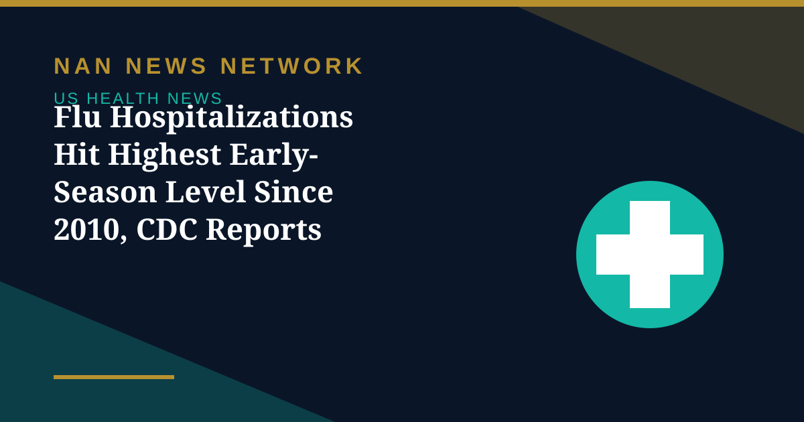

Flu Hospitalizations Hit Highest Early-Season Level Since 2010, CDC Reports

Flu hospitalizations are at their highest early-season level since 2010, according to the CDC's latest FluView report, published Friday, November 20, as millions of Americans prepare to travel for Thanksgiving, Becker's Hospital Review reported on November 23.
The CDC numbers
US hospitals reported 11,734 lab-confirmed flu admissions in the week ending November 14, a 22 percent jump from 9,584 the week before and the first week this season above 10,000. The CDC's FluSurv-NET network, which tracks hospitalizations in selected counties, puts the cumulative hospitalization rate at 12.0 per 100,000 people, the highest at this point in a season since 2010-11. So far this season, the CDC estimates at least 3.7 million illnesses, 50,000 hospitalizations and 2,800 deaths. Seven children have died of flu this season, including two deaths reported in the past week, both associated with H1N1. Flu accounted for 2.4 percent of emergency department visits, up from 2.2 percent the week before, and 3.8 percent of outpatient visits involved flu-like illness, above the national baseline of 2.9 percent.
Thanksgiving travel adds risk
Thanksgiving falls on Thursday, November 26, and about 81.5 million Americans are expected to travel 50 miles or more between November 24 and 30, including roughly 6 million flying. The CDC's FluSight forecast for Thanksgiving week, ending November 28, projects between 9,200 and 36,100 new flu admissions. The season's surge is being driven almost entirely by influenza A(H1N1)pdm09, which accounts for 98.9 percent of subtyped influenza A viruses. The CDC cautions that an early rise in activity does not necessarily mean the season will peak higher or be more severe overall, and its preliminary assessment rates the severity of the season so far as low across all age groups. The CDC recommends a flu shot for everyone 6 months and older, and its next weekly report is due on November 30.
Sources: CDC FluView via Becker's Hospital Review, November 23, 2026; America Mornings, November 23, 2026
More on US Health News
- FDA Approves Livsayis, First siRNA Therapy for Generalized Myasthenia Gravis
- Ohio Teen Dies in State's First Pediatric Flu Death as Early Flu Season Collides With Thanksgiving Travel
- Flesh-Eating Screwworm Cases Surge in US, Keeping Ranchers on Alert
- Young Child Dies in Virginia's First Measles Death of 2026 as US Cases Near 6,000
- Ebola Cases More Than Double in Three Months to 11,645 as Deaths Reach 5,683
- Flu Admissions Surge to Seven Times Last Season's Level as Cases Climb Early
- Democrats Set to Intensify Probe of Trump's Obamacare Purge After 760,000 Lost Coverage
- Pennsylvania Records Eighth Measles Death as US Total Reaches 11 This Year
- CDC Data Links Measles in Pregnancy to Congenital Infection and Preterm Birth
- US Officially Loses Measles Elimination Status After 26 Years as Cases Top 5,400
- FDA Approves Lembaz, First Niemann-Pick Type C Therapy Shown to Cut Death Risk
- CDC Declined to Alert Doctors on Measles Risk in Pregnancy. A Journal Published the Data Instead
- Raw Milk E. Coli Outbreak Investigations Declared Over After 18 People Sickened in 10 States
- FDA Investigating Two New Salmonella Outbreaks as Javiana Cases Climb to 70
- Moderna's mRNA Flu Vaccine mFlusiva Reaches First Season After FDA Approval
- Wisconsin Reports Second Child Death as Measles Outbreak Spreads Across the US
- Ebola Trials Advance in Congo as Bundibugyo Outbreak Passes 11,000 Cases
- US Loses Measles-Elimination Status After 26 Years as Virus Spreads for Over a Year
- Flu Season Arrives Early as CDC Estimates 1.7 Million Illnesses and Three Child Deaths
- CDC Confirms Six Measles Deaths in 2026 as Cases Pass 5,000 in Worst Outbreak Since 1991
- US Health Officials Pause Chikungunya Vaccine for Over-60s After 17 Serious Events
- FDA Nominee Heidi Overton Faces Shaky Senate Vote on Nov 18
- Trump Administration Proposes Cutting Food Aid for 6.3 Million People
- CDC Chief: Measles Response Will Not Change Even if US Loses Elimination Status
- Childhood Vaccination Rates Fall Across the US as School Exemptions Hit Record High
- FDA Orders New Eye Warning on Ozempic, Zepbound and Other GLP-1 Drugs
- Blood Test Spots Ovarian Cancer at Its Earliest, Precancerous Stage, Study Finds
- PAHO to Review US Measles Elimination Status as Cases Hit 5,182
- Flu Season Surging Early as San Francisco Test Positivity Hits 22.5%
- Wisconsin Infant Dies of Measles as US Death Toll Reaches 8 in 2026
- Flu Hospitalizations Hit Highest Week-42 Rate Since 2010 as H1N1 Dominates
- CDC: Flu Rising in 26 States as Illnesses Reach 1.7 Million
- US Measles Cases Reach 5,182, Highest Annual Total Since 1991
- Washington Resident Dies of Bird Flu in First US Death in a Year
- Flu Season Starts Early as Mutated H1N1 Strain Drives a Surge in Cases
- Metoclopramide Tablets Recalled Over Cross-Contamination With Other Medications
- FDA Warns Parents Not to Serve Once Upon a Farm Toddler Bars After Choking Reports
- CVS Health to Split Into Two Companies: Pharmacies in One, Aetna and Caremark in the Other
- FDA Tentatively Approves First Generic Lenacapavir, Priced at $40 a Year in 120 Countries
- FDA Recalls Thousands of Blood Pressure Medicine Bottles Over Excess Levels and Failed Tests
- Energy Drinks and Cardiac Arrest: What a New Study Actually Shows — and What It Doesn't
- FDA to Review uniQure's Huntington's Gene Therapy, Decision Due by May 2027
- 'Dark Nutrition' Fans Drink Raw Milk, but FDA and CDC Flag the Catch
- FDA Floats Draft Peptide Compounding Policy Covering Six Peptides, Comments Open to November 13
- Wise Wife Ground Cinnamon Recalled in 14 States Over Elevated Lead Levels
- FDA Grants Accelerated Approval to Voceryq, the First Plasmid DNA Immunotherapy in the US
- FDA Approves At-Home Subcutaneous Induction for Skyrizi in Crohn's Disease
- FDA Authorizes 24 Velo Nicotine Pouches, Bringing Total Authorized Pouches to 67
- FDA Updates Menopause Hormone Therapy Labels for Three More Products in Women's Health Push
- FDA Declares Trader Joe's Chicken Wrap E. Coli Outbreak Over After 50 People Fell Ill
- FDA Recalls More Than 21,000 Bottles of Blood Pressure Drug Over Excess Active Ingredient
- FDA Recall: Miyoko's Plant-Based Butter Pulled in 10 States Over E. Coli, Yeast and Mold
- CDC: Drug-Resistant Germs Cause Nearly 9.7 Million US Infections a Year
- CDC Deputy Director Jennifer Shuford to Leave After Midterms, Report Says
- FDA Clears Cullinan's Velinotamig Trial for Autoimmune Blood Disorders
- Regeneron Extends US Ebola Supply Deal Worth About $270 Million Through 2031
- FDA Warns San Francisco Fermented Foods Maker Over Pathogen Risks and Labeling
- Salmonella Oyster Recall Expands: What to Know About the Little Wicomico Outbreak
- Graziers Raw Milk Cheese Recall: 13 Sick, 8 Hospitalized as FDA Issues Class I Warning
- CDC and FDA Performance Ratings Hit All-Time Lows in Gallup Poll